Kostya
| 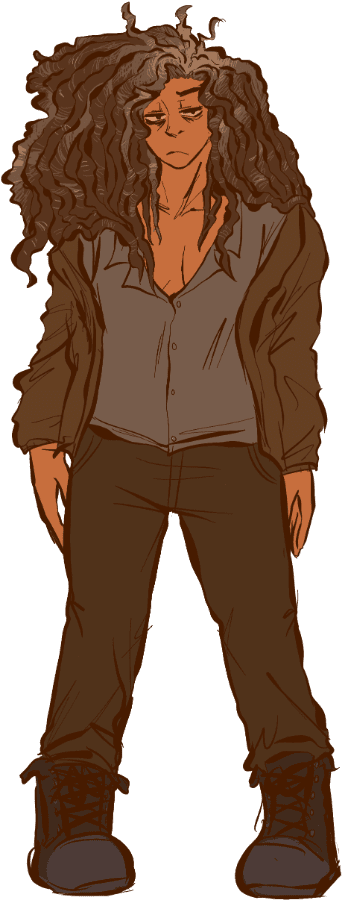 |
Name: Kostya (Konstantin) Gender: Transmasc (he/him) Age: 32 Height: 6'0" Ethnicity: Mixed Afro-Russian Occupation: Repairman (previously a construction worker) Interests: Resting, tinkering with stuff, fishing Voice: Harsh and raspy. People would say he has a smoker’s voice, which isn’t exactly wrong. He always sounds mad, even if he isn’t. He forces a softer tone around children. Personality: Extremely irritable and appears tired, but actually has a lot of pent-up energy. He used to be fairly relaxed but immediately became hostile once the plague began. He has an extreme distrust of authority and feels a strong need to protect the common folk, which frequently shows itself through him lashing out against people he sees as being black-hearted and unconcerned with everyone’s well-being. He has a soft spot for Mura and the children though and is more protective of them than anyone else. General backstory: Kostya moved to Town-on-Gorkhon three years before Mura. He lived in the same town as Mura ever since they were children. He mainly stayed behind to keep Mura company but left because he reached the breaking point when it came to dealing with the unhealthy dynamics in his family (mother, father, three brothers). He headed off to the Town in hopes he would be untraceable to his family and lead a nice, quiet life. He would frequently send letters to Mura. He disliked the rich neighborhoods in the rest of the town as well as the local authorities and slowly built a good reputation amongst the Kin, factory workers and drunks. He lives in Earth close to Rubin and Aspity’s homes, both of whom he met and befriended a few days after moving in. He wasn’t particularly on anyone’s radar until the plague hit, where he became a feared presence to anyone who wasn’t already familiar with him and a wanted target by the ruling families. |
“Kostya might seem a little grumpy, but it’s him that made me want to try and help people. I’ve known him for years, so it may come as a surprise, but within him is a clouded mind, a troubled soul, and a beautiful heart... It reminds me of that saying, ‘Don’t hurt the people someone loves, for he will go on loving, but he will hate you.’ Ah, wait, I might have misremembered it… But, that’s what principle I think guides him.”
Plot Significance
- If Artemy goes by Kostya’s house, he will run up and attack him on Day 1.
- Kostya is killable in fights, but can sustain a great amount of damage. He doesn’t have a surrender animation and will only have a Broken Ampoule on him if killed. All organs aside from his heart will be labeled “Rotten” and unusable in making tinctures.
- There is a hidden variable that tracks your interactions with Mura. When the value is high enough, a courier will arrive and tell Artemy to meet Kostya at his house. Kostya reveals that Mura asked him to “help out” a little more and can now be visited for equipment repairs.
- If Mura dies, Kostya will be hostile for the rest of the game.
Gives: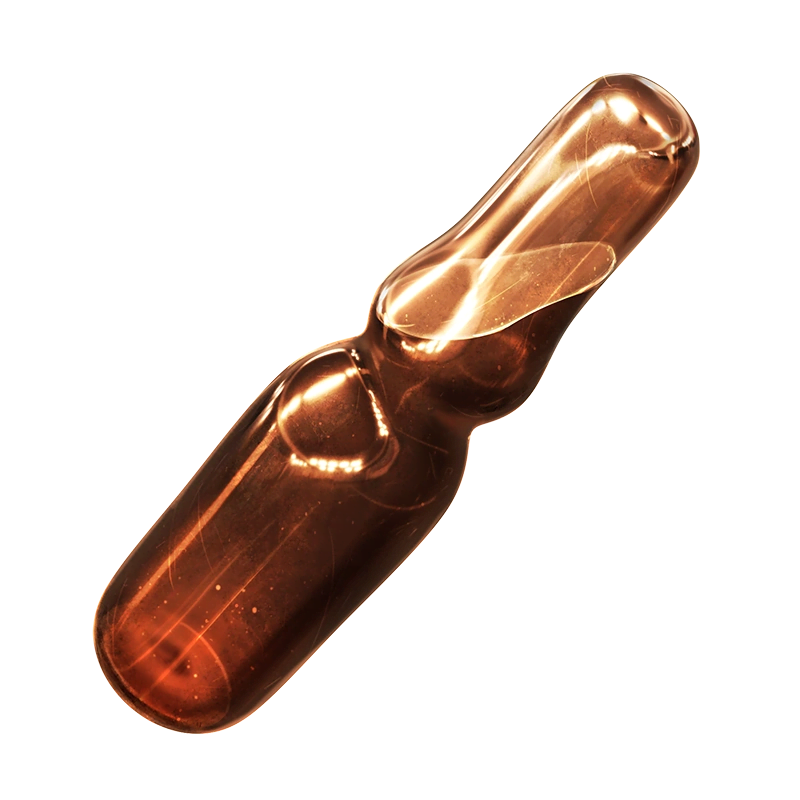 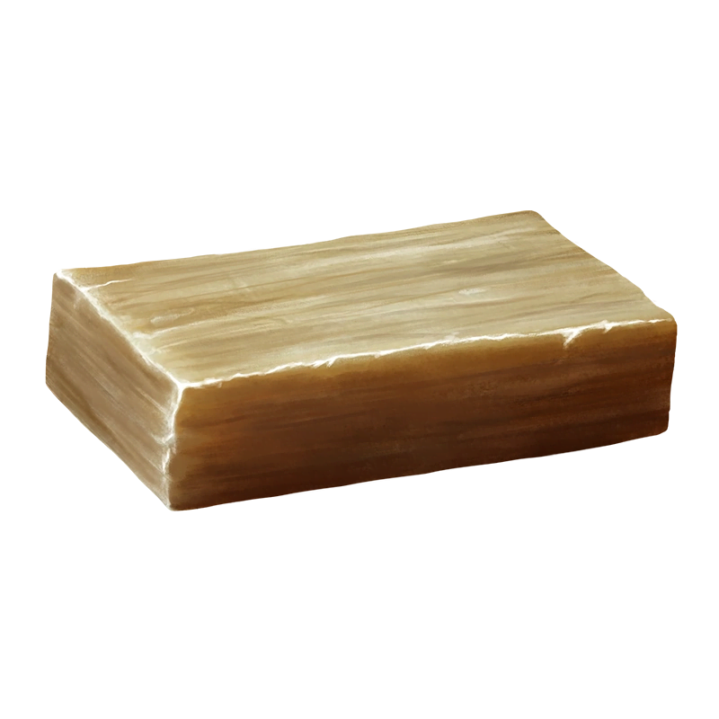
|
Takes: 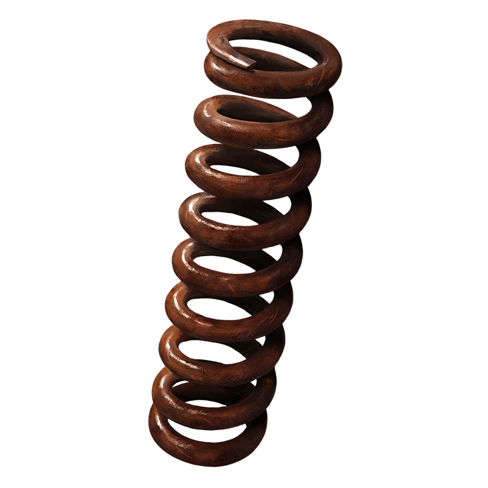
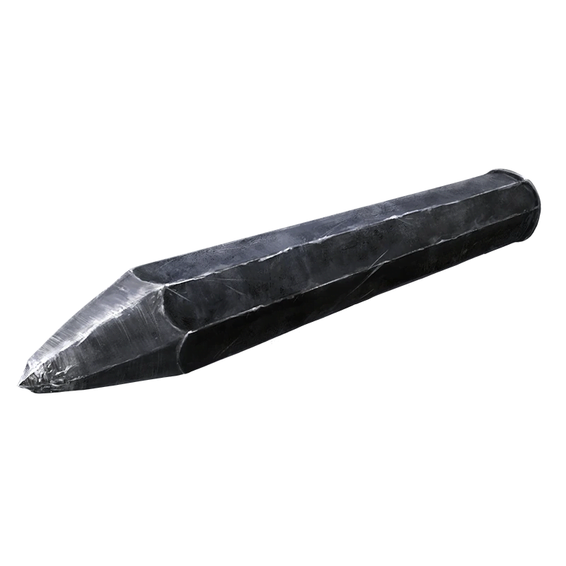
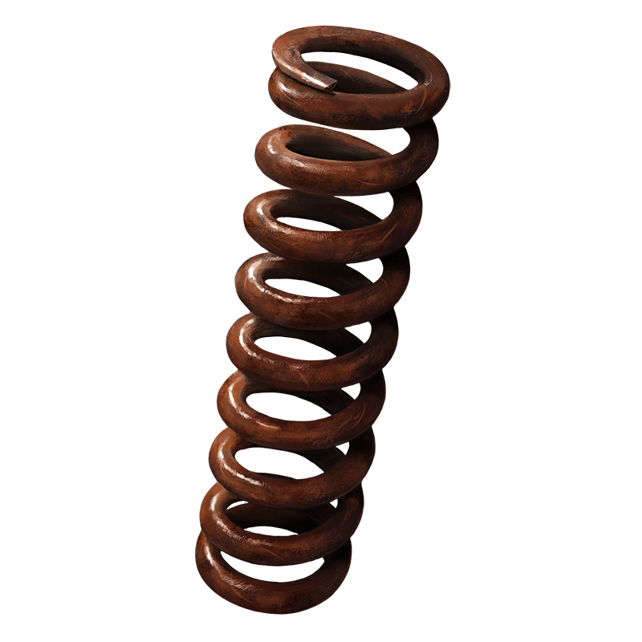
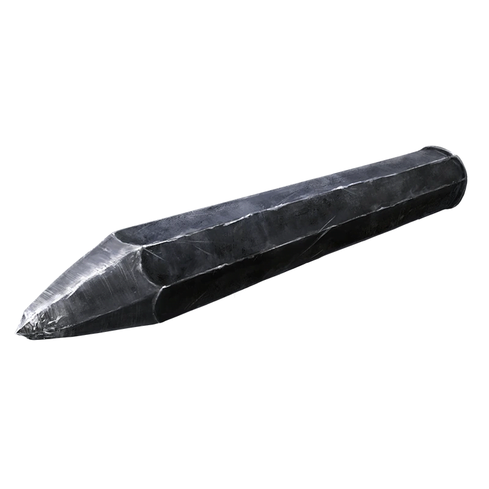
|
Friends: 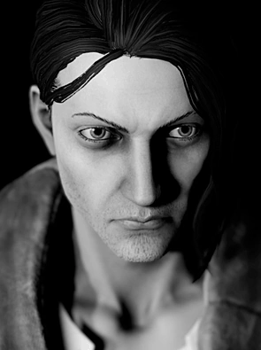
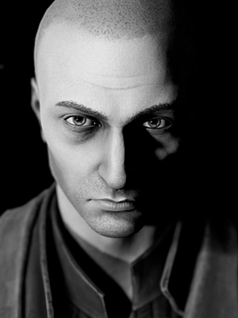
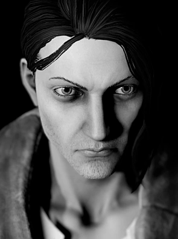
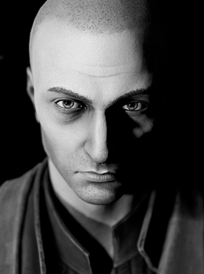
|
Enemies:


|
Voice Lines
- I’ve been told I have a few screws loose. At this rate, won't be long until I fall apart.
- My machinery is on the fritz.
- Grief used to be a clocksmith, eh? Maybe I should pay him a visit. My gears have stopped turning.
- You’ve got some nerve coming around these parts, Ripper.
- Heaven has no rage like love to hatred turned.
- I know I wasn’t always like this.
- Looly-looly-loolenki… There come my little doves… [sigh] How does the rest go, again?
- Exhausted, but no time to rest.
- I normally hate the stuff, but... what I wouldn’t give for some twyrine to quiet my mind.
- I’ve enough damn dreams for the year.
- I must be seeing things.
- [clicks tongue]
- What?!
- Whichever finger bleeds, the whole hand aches.
- What do you call such a man? A slave. You call him a slave.
- And worst of all, a coward. Always been a coward. Oh, how I hate it…
- Some of my most trusted comrades are trapped in the Termitary. What am I supposed to do…
- Isn’t there a war going on? What the hell is the military wasting resources on our town for?
- Saburov abusing his authority is nothing new. Regardless, he’ll never catch up to me.
- You think you can beat the Pest? Hah! I lived through the first outbreak. No son is greater than his father.
- My path was called Retribution. Who else but I could bear the burden of protecting the innocent? None of those bastards held any compassion in their hearts.
Trivia
- Kostya, like Rubin, cannot get infected.
- Kostya wears thick locs with loose ends. He hates when people touch his hair aside from Mura, but refuses to let him do anything else to it other than brush it. The most Kostya does to care for his locs are shampooing and putting a bit of honey + lemon mixture on them.
- Kostya used to babysit Mura when he was 13 years old and Mura was 6 years old.

{kind=link}
{kind=link}
{kind=link}